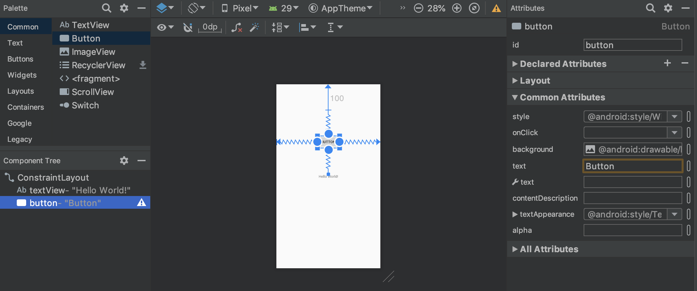
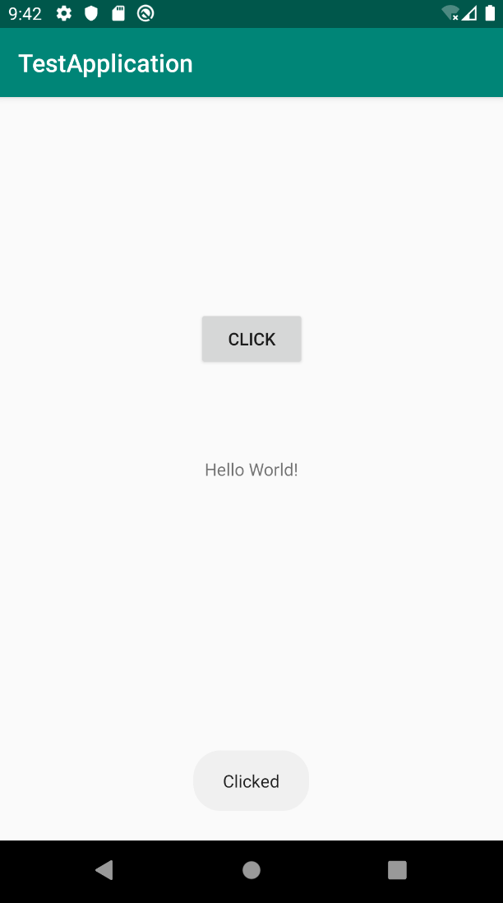

Android + Kotlinを用いてアプリ開発をするときの勉強メモ。勉強メモなので備忘録程度にしか書いてない。
次のことをやった。
- ボタンを押すとToastを表示
- DataBindingを用いる
- Fragmentを用いる
- Fragment + DataBinding
Android Kotlin Fundamentals Courseでの01-03辺りを勉強した記録なので、詳しいことはそちらに載っている。
前提
- Kotlinは未学習だが雰囲気で読める
- Android開発は完全未経験
- Android Studioの環境構築は済んでいる
- エミュレータのインストールも完了している
- Build & Runの方法も知っている
プロジェクト作成
とりあえずプロジェクト名はTestProjectとする。
左側のペインに色々ディレクトリ・ファイルがある。色々漁ってみると、次のようなものがある。
java/com.example.testapplication/: 基本的にはこの中にKotlinのソースコードを入れるっぽい。ディレクトリ名がjavaなのは歴史的な理由らしい。res/: resourceの略で、画面や定数の定義がこの中に色々入っている。
res/layout: 画面の定義ファイルが入っているres/values: 定数の定義が入っている
res/values/colors.xml: 色定義res/values/strings.xml: 文字列定数の定義res/values/styles.xml: styleの定義。画面の部品のstyleをCSSみたいに設定するためのもの。
build.gradle: Buildの際の様々な設定を記したファイル。
ボタンの配置
res/layouts/activity_main.xmlにメイン画面の定義が書かれている。中央ペイン左下にDesign/Textを切り替えるタブがある。
Designタブ
GUIで画面の構造をいじるための画面。直感的に操作できる。色々なペインで分かれている。
- Palette: ドラックアンドドロップできる。
- Component Tree: 部品同士の階層構造を表示している。内部構造はXMLなので部品は階層構造になっている。
- Attributes: 部品の様々な属性を設定。たくさんあるが、虫眼鏡マークで検索可能。便利。中でもid属性は重要。
- id: 部品の識別子。プログラムからアクセスするためにここの設定が必要。
Component Treeにおいて、rootがConstraint Layoutであることに注目。これはConstraint(制約)を用いて部品の配置を設定するためのLayoutである。Constraintについてはやってみた方が早い。
- PaletteからButtonをドラッグ&ドロップする。
- Buttonをクリックすると4辺が白丸になる。以下のようにしてConstraintを設定する。ボタンの配置は一意に決まる。
- 上/右/左側の丸を画面上/右/左端にくっつける
- 下側の丸をTextViewの上端にくっつける

こんな感じでカーソルで引っ張って部品の位置を決定していく。Padding/Margin、Biasなどの設定はAttributeの方で行える。
次にButtonのテキストを設定する。
- Attributeタブのtext属性を見つける。入力欄の右に細い長方形があるのでクリックすると”Pick a Resource”というウインドウが現れる。右上の”Add new resource” → “New string value”を選ぶ。設定を以下のようにする。
- Resource name: click
- Resource value: Click
すると、新たに文字列定数clickが追加され、その定数が使われる。res/values/strings.xmlは以下のような定義になっている。このように、文字列などの定数はAttributeに直接指定せず、strings.xmlに設定してそこから参照するのが普通っぽい。
<resources>
<string name="app_name">TestApplication</string>
<string name="click">Click</string>
</resources>
Textタブ
XMLファイルを直接いじるための画面。部品の属性を覚えてしまえば、こっちでいじった方が早そう。
Designタブで設定した内容は、次のように反映されている。
<?xml version="1.0" encoding="utf-8"?>
<androidx.constraintlayout.widget.ConstraintLayout xmlns:android="http://schemas.android.com/apk/res/android"
xmlns:app="http://schemas.android.com/apk/res-auto"
xmlns:tools="http://schemas.android.com/tools"
android:layout_width="match_parent"
android:layout_height="match_parent"
tools:context=".MainActivity">
<TextView
android:id="@+id/textView"
android:layout_width="wrap_content"
android:layout_height="wrap_content"
android:text="Hello World!"
app:layout_constraintBottom_toBottomOf="parent"
app:layout_constraintLeft_toLeftOf="parent"
app:layout_constraintRight_toRightOf="parent"
app:layout_constraintTop_toTopOf="parent" />
<Button
android:id="@+id/button"
android:layout_width="wrap_content"
android:layout_height="wrap_content"
android:layout_marginTop="100dp"
android:text="@string/click"
app:layout_constraintBottom_toTopOf="@+id/textView"
app:layout_constraintEnd_toEndOf="parent"
app:layout_constraintStart_toStartOf="parent"
app:layout_constraintTop_toTopOf="parent" />
</androidx.constraintlayout.widget.ConstraintLayout>
名前空間とか属性とか値とかは覚えていくしかないが、とりあえず気になった2点だけ補足する。
@+id/button: @+idというのは、buttonという名前のidをコンパイラに伝えるためのものらしい。プログラム内でR.id.id名という書式でidにアクセスできるようになる。@string/click: strings.xmlにおいて、name属性がclickの要素を指す。さっき設定したやつ。
ボタンを押したら反応するようにする
java/com.example.testapplication/MainActivityを開いて、onCreate関数の内容を以下のようにする。
override fun onCreate(savedInstanceState: Bundle?) {
super.onCreate(savedInstanceState)
setContentView(R.layout.activity_main)
findViewById<Button>(R.id.button)
.setOnClickListener { view: View ->
Toast.makeText(this, "Clicked", Toast.LENGTH_SHORT).show()
}
}
赤くなっている文字にカーソルを乗せてみて、”Unresolved Reference”と表示されることがある。これは多くの場合import宣言が足りないことが原因。とりあえずAlt + Enterを押すと自動で補完してくれる。非常に便利。
findViewById<Button>(R.id.button): JSでのgetElementByIdみたいなやつ。idはR.id.id名で指定する。返却値の型は<Button>として指定しているっぽい。おそらくC++のテンプレートみたいなもの。setOnClickListener: クリック時のイベントリスナを指定する。引数指定が括弧ではなくて波括弧なのが気になるが、どうやらこれはラムダ式の書式らしい。そういえばSwiftにも似たようなのがあったな。Toast.makeText(context, str, duration).show(): contextは呼び出し時の環境、strは表示文字列、dirationは表示時間。
これでアプリを動かしてみる。ボタンをクリックすると、Clickedというメッセージが画面下に表示される。このメッセージのことをToastと言うらしい。知らなかった。

さらに、Hello, Worldという文字列をGood Bye, Worldという文字列に変える。onClickListenerを以下のように変える。
findViewById<Button>(R.id.button)
.setOnClickListener { view: View ->
Toast.makeText(this, "Clicked", Toast.LENGTH_SHORT).show()
findViewById<TextView>(R.id.textView).text = "Good Bye, World!"
}
TextViewのtext要素を変えるにはtextメンバ変数の値をいじる。
DataBindingに書き換える
findViewByIdでいちいち要素を探すのは効率が悪いので、DataBindingという仕組みを用いる。
本来DataBindingには、単に効率改善だけが目的ではなく、あるデータとlayoutを結びつける目的がある。その話について今回は省略。
まずはbuild.gradle(Module: app)について、android{ ... }の中に以下の記述を追加する。これでDataBindingの機能を有効にするらしい。
android {
...
dataBinding {
enabled true
}
}
“Sync now”と書かれた青いバーが現れたら、それを押す。
res/layouts/activity_main.xmlについて、layoutタグで全体をくくる。ConstraintLayoutタグの属性に指定していたxmlns属性は全てlayoutタグに移す。
“Code” → “Reformat Code”でコードの再整形を行える。
<?xml version="1.0" encoding="utf-8"?>
<layout xmlns:android="http://schemas.android.com/apk/res/android"
xmlns:app="http://schemas.android.com/apk/res-auto"
xmlns:tools="http://schemas.android.com/tools">
<androidx.constraintlayout.widget.ConstraintLayout
android:layout_width="match_parent"
android:layout_height="match_parent"
tools:context=".MainActivity">
...
</androidx.constraintlayout.widget.ConstraintLayout>
</layout>
続いてMainActivityの方で、onCreate周辺の記述を以下の通りにする。
private lateinit var binding: ActivityMainBinding
override fun onCreate(savedInstanceState: Bundle?) {
super.onCreate(savedInstanceState)
setContentView(R.layout.activity_main)
binding = DataBindingUtil.setContentView(this, R.layout.activity_main)
binding.button.setOnClickListener { view: View ->
Toast.makeText(this, "Clicked", Toast.LENGTH_LONG).show()
findViewById<TextView>(R.id.textView).text = "Good Bye, World!"
}
}
ActivityMainBinding: bundle.gradleとactivity_main.xml設定をしておくと、このクラスが勝手に作られるっぽい。lateinit: 初期化をonCreateのときまで遅延させるための修飾子らしい。DataBindingUtil.setContentView: これでactivity_mainの情報を取得する。それ以降はbinding.id名の形でactivity_main.xmlの部品にアクセスできる。
Fragmentの利用
Fragmentを利用して、「テキスト+ボタン」という画面を部品化する。今回の場合画面が1つしかないのでわざわざFragmentで分ける必要はないのだが、、複数画面の遷移を表現したい時に、このようにFragmentで扱う。
layout/を右クリックして、”New” → “Fragment” → “Fragment(Blank)“を選択する。設定は以下の通り。
- Fragment Name: TestFragment
- Fragment Layout Name: fragment_test
- Create layout XML?のチェックを入れる
- Include fragment factory methods?のチェックを外す
- Include interface callbacks?のチェックを外す
layout/fragment_test.xmlができているので、それを開く。layout/activity_main.xmlの内容の一部をコピーしてくる。さらに、fragment要素にxmlns:appの属性を追加する。ConstraintLayoutに指定してあったtools:contextの記述は消す。fragment_test.xmlの内容は以下の通りになる。
<?xml version="1.0" encoding="utf-8"?>
<FrameLayout xmlns:android="http://schemas.android.com/apk/res/android"
xmlns:app="http://schemas.android.com/apk/res-auto"
xmlns:tools="http://schemas.android.com/tools"
android:layout_width="match_parent"
android:layout_height="match_parent"
tools:context=".TestFragment">
<androidx.constraintlayout.widget.ConstraintLayout
android:layout_width="match_parent"
android:layout_height="match_parent" >
<TextView
android:id="@+id/textView"
android:layout_width="wrap_content"
android:layout_height="wrap_content"
android:text="Hello World!"
app:layout_constraintBottom_toBottomOf="parent"
app:layout_constraintLeft_toLeftOf="parent"
app:layout_constraintRight_toRightOf="parent"
app:layout_constraintTop_toTopOf="parent" />
<Button
android:id="@+id/button"
android:layout_width="wrap_content"
android:layout_height="wrap_content"
android:layout_marginTop="100dp"
android:text="@string/click"
app:layout_constraintBottom_toTopOf="@+id/textView"
app:layout_constraintEnd_toEndOf="parent"
app:layout_constraintStart_toStartOf="parent"
app:layout_constraintTop_toTopOf="parent" />
</androidx.constraintlayout.widget.ConstraintLayout>
</FrameLayout>
layouts/activity_main.xmlの内容を以下の通りにする。LinearLayoutの内側にfragmentを配置している。name属性をTestFragmentにしていることに注目。これにより、fragment要素の部分がfragment_test.xmlの内容に置き換わる。
<?xml version="1.0" encoding="utf-8"?>
<layout xmlns:android="http://schemas.android.com/apk/res/android"
xmlns:app="http://schemas.android.com/apk/res-auto"
xmlns:tools="http://schemas.android.com/tools">
<LinearLayout
android:layout_width="match_parent"
android:layout_height="match_parent"
android:orientation="vertical">
<fragment
android:id="@+id/titleFragment"
android:name="com.example.testapplication.TestFragment"
android:layout_width="match_parent"
android:layout_height="match_parent"
/>
</LinearLayout>
</layout>
MainActivity.ktの内容の一部を消す。結局MainActivityは以下の通りになる。
class MainActivity : AppCompatActivity() {
override fun onCreate(savedInstanceState: Bundle?) {
super.onCreate(savedInstanceState)
setContentView(R.layout.activity_main)
}
}
最後に、TestFragment.ktの内容を以下の通りにする。
class TestFragment : Fragment() {
override fun onCreateView(
inflater: LayoutInflater, container: ViewGroup?,
savedInstanceState: Bundle?
): View? {
// Inflate the layout for this fragment
val view = inflater.inflate(R.layout.fragment_test, container, false)
view.findViewById<Button>(R.id.button)
.setOnClickListener{
Toast.makeText(view.context, "Clicked", Toast.LENGTH_SHORT).show()
view.findViewById<TextView>(R.id.textView).text = "Good Bye, World"
}
return view
}
}
inflater.inflate(...): activity_main.xmlにおけるfragment要素をfragment_test.xmlの内容に置き換える作業はこの関数がやっているっぽい。置き換え後のViewを返してくるので、以降はそれを利用してボタンなどに関する処理を書く。return view: 作成したViewを返すようにしている。
DataBindingに置き換える
DataBindingを使うので、fragment_test.xml全体をlayout要素でくくる必要がある。FrameLayout要素はいらないのでlayout要素に直接置き換えることにする。以下のようになる。
<?xml version="1.0" encoding="utf-8"?>
<layout xmlns:android="http://schemas.android.com/apk/res/android"
xmlns:app="http://schemas.android.com/apk/res-auto"
xmlns:tools="http://schemas.android.com/tools"
android:layout_width="match_parent"
android:layout_height="match_parent"
tools:context=".TestFragment">
<androidx.constraintlayout.widget.ConstraintLayout
android:layout_width="match_parent"
android:layout_height="match_parent" >
...
</androidx.constraintlayout.widget.ConstraintLayout>
</layout>
次に、TestFragment.ktの内容を以下の通りにする。
class TestFragment : Fragment() {
override fun onCreateView(
inflater: LayoutInflater, container: ViewGroup?,
savedInstanceState: Bundle?
): View? {
// Inflate the layout for this fragment
val binding = DataBindingUtil.inflate<FragmentTestBinding>(inflater, R.layout.fragment_test, container, false)
binding.button.setOnClickListener{
Toast.makeText(view.context, "Clicked", Toast.LENGTH_SHORT).show()
binding.textView.text = "Good Bye, World"
}
return binding.root
}
}
DataBindingUtil.inflate: Fragmentに対してDataBindingを利用する場合はこれを使ってinflateする。return binding.root: binding.rootがViewを持っているのでそれを返す。
基本的なところを学んだ。今回はここまで。